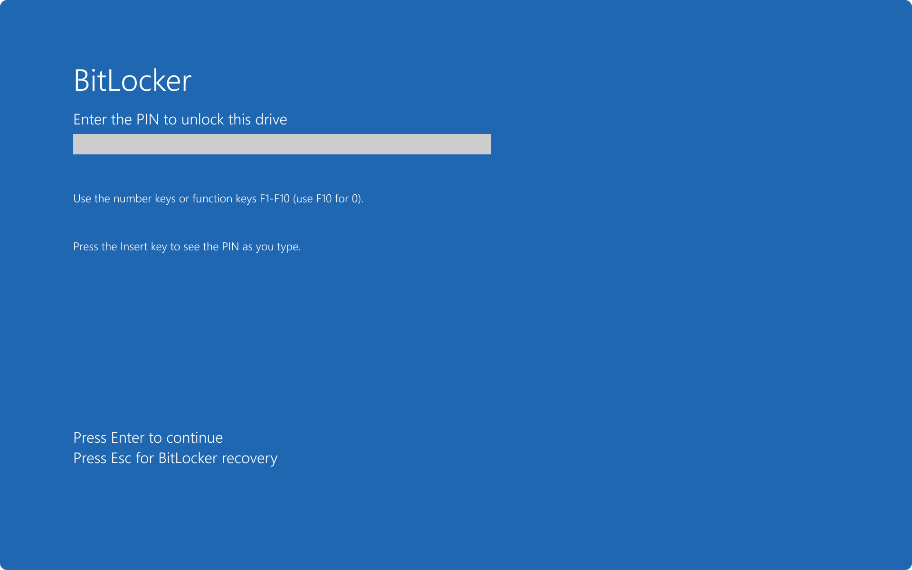
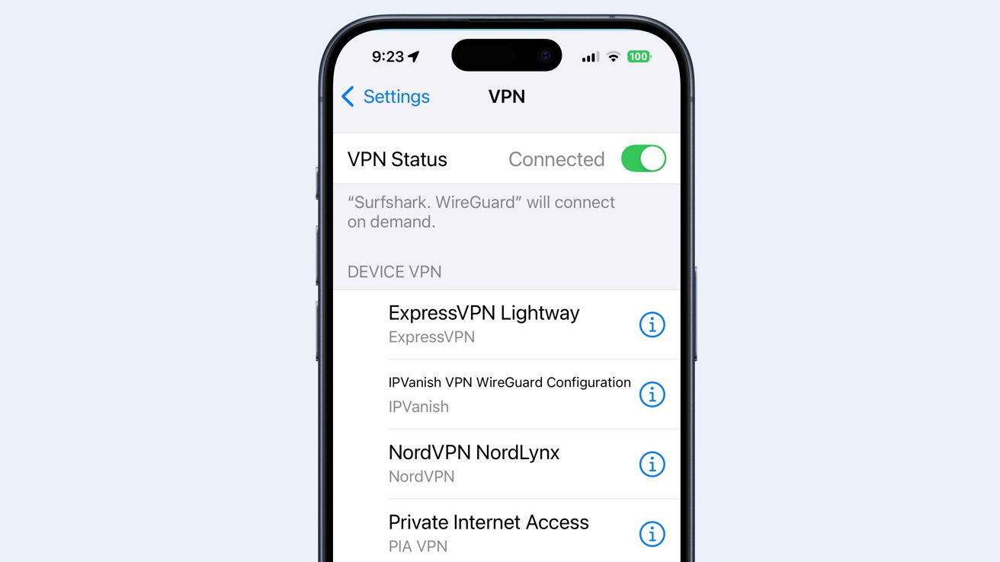

Proteger tu Laptops

Presentación Paso a Paso
Laptops: Oficina Blindada
Cierre la puerta a los espías cuando trabaje fuera de casa.
Riesgo en Redes Públicas
Al ser portátiles, las laptops se exponen a redes Wi-Fi de cafés u hoteles. Estas redes son trampas:
- Robo de datos: Hackers "escuchan" todo lo que usted envía.
- Acceso físico: Si le roban el equipo, sus archivos están expuestos.
- Puertos abiertos: Virus que saltan de un equipo a otro en el mismo Wi-Fi.
Paso 1: Cifrado de Disco Duro

Proteja sus archivos físicamente. Si le roban la laptop, que no vean sus fotos ni bancos:
- Windows: Active BitLocker en Ajustes > Seguridad.
- Mac: Active FileVault en Privacidad y Seguridad.
- Esto pone un candado a todo el disco. Sin su clave de inicio, los archivos son ilegibles para un ladrón.
Paso 2: Use VPN Siempre
Cree un túnel secreto para sus datos en redes públicas:
- Contrate un servicio de VPN confiable (NordVPN, Mullvad).
- Actívela antes de abrir su correo o banco en el Wi-Fi del hotel.
- La VPN cifra su rastro, haciendo que su conexión sea invisible para otros usuarios de la red.
